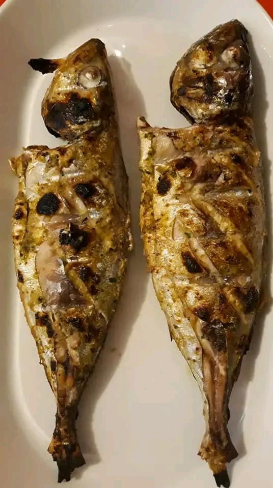
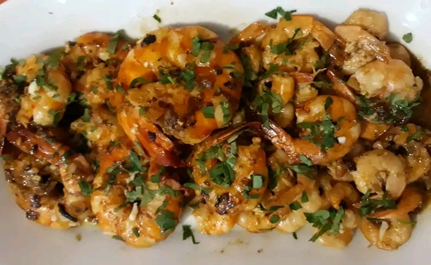

Gastronomia
A gastronomia da Guiné-Bissau é saborosa e baseada em produtos naturais como peixe, arroz, óleo de palma e frutos do mar. Os pratos tradicionais são preparados com temperos locais que dão um sabor especial à comida.


Entre os pratos mais conhecidos estão o arroz com peixe, caldo de mancarra (amendoim), chabéu e pratos à base de marisco. A comida guineense é simples, nutritiva e muito apreciada pelos visitantes.

Além da comida, as bebidas tradicionais e os sumos naturais também fazem parte da experiência gastronómica do país.